Comprate nella seconda settimana. Le giornate nerd (6, 9, 10, 11 e 12) sono quasi tutte a Tokyo e a fine viaggio: così non vi trascinate scatoloni per due settimane né li caricate sullo Shinkansen. A Osaka il Giorno 6 limitatevi a quello che a Tokyo non trovate.
Come si legge un'etichetta
- S / A ランク
Praticamente nuovo, spesso ancora imballato. Sconto piccolo: 10-20% dal nuovo. Raramente è l'affare. - B ランク
Usato ma in ordine, magari con la scatola segnata. È qui che sta il punto giusto: -30/-50% e nella pratica non si nota la differenza. - C ランク
Graffi visibili, scatola rovinata, manca un accessorio. Funziona tutto. -50/-70%. - ジャンク (junk)
La parola chiave che cercate. Venduto come visto, senza garanzia e senza reso: può essere rotto, ma molto spesso è solo estetica o manca il cavo. Prezzi da 100 a 1.000 yen. Tenetelo per le cose che sapete riparare o di cui non vi importa lo stato. - 動作確認済 / 未確認
Dosa kakunin-zumi = funzionamento verificato dal negozio. Mikakunin = non verificato. Sulle console retro guardate sempre questa riga. - 未開封 / 開封済Figure
Mikaifū = mai aperto, sigillo di fabbrica intatto. Kaifū-zumi = aperto. Da Surugaya la regola è che tutto è considerato aperto salvo scritta contraria, perché controllano la merce quando la ritirano. - 箱痛み / 欠品Figure
Hako-itami = scatola ammaccata, contenuto integro: è lo sconto migliore se la scatola la buttate comunque. Kesshin = manca un pezzo, e sulle figure sono quasi sempre le mani o gli accessori intercambiabili, che da soli non si ricomprano. - Attenzione: "rank B" non vuol dire la stessa cosa ovunque
Da Amiami il rank B è un normale usato aperto ma integro; da Surugaya il rank B vuol dire che la confezione è danneggiata. Stessa lettera, due significati. E da Surugaya i rank B, C e D sono venduti senza diritto di reclamo. - 訳あり (wake-ari)
Letteralmente "c'è un motivo": prodotto nuovo scontato per un difetto dichiarato — scatola ammaccata, confezione aperta, modello uscito di listino. È l'equivalente giapponese dell'outlet, ed è spesso la categoria più conveniente in assoluto sull'elettronica.
Le catene e cosa cercarci
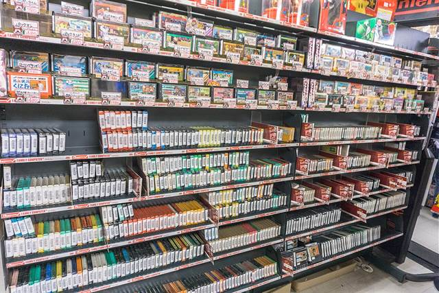
- Book OffIl più economico
Manga usati da 110 yen a volume, CD, Blu-ray. Trappola da sapere: i Book Off normali vendono soprattutto libri e dischi, al massimo qualche gioco — per console e figure serve un Book Off Super Bazaar, che è il formato grande. Quello di Akihabara ha tutto ma è il più saccheggiato di Tokyo, perché ci passano tutti. - Hard Off / Off HouseIl junk vero
La costola elettronica di Book Off, e il posto dove esiste davvero l'angolo junk: cassoni di roba a 110-550 yen, cavi, joypad, hi-fi, portatili, console anni '90. In centro a Tokyo ce ne sono pochi: ad Akihabara sono due. Il 1° punto vendita sta dentro il palazzo GENO, con l'angolo junk al piano interrato e i giochi al secondo. Il 2°, quello che vi serve, è su Junk Street: dal seminterrato al secondo piano Hard Off, al terzo e quarto Hobby Off per figure e giocattoli usati, 11:00-20:00. È in programma al Giorno 11, come ultima tappa. - Surugaya · Jan-gleDa rovistare
Figure senza scatola, giochi sciolti, carte. Prezzi più bassi di Mandarake, presentazione peggiore. Jan-gle (Akihabara) è la scommessa migliore sui giochi usati: stesse cose di Book Off a qualche centinaio di yen in meno. Surugaya ha sedi ad Akihabara, Ikebukuro e Nipponbashi (Osaka). - MandarakeIl pezzo serio
Usato di alta gamma con grading rigoroso, autenticità garantita e prezzi onesti. Nakano Broadway è la casa madre: 27 negozi separati nello stesso edificio, uno per categoria. Non è un negozio, è un labirinto — leggete l'insegna prima di entrare. - AmiamiFigure nuove scontate
Il negozio di figure di Akihabara che vende il nuovo sotto listino (tipicamente -10/-25%), più un piano di usato con la classificazione più chiara del Giappone. È il posto giusto se volete una figure nuova e non vi interessa cercarla usata. Sta al quarto piano del Radio Kaikan, cioè dentro una tappa che avete già (Giorno 11, 10:30), 10:00-20:00 e tax-free. - Sofmap · Janpara · Iosys · PC Koubou · TsukumoTech
Portatili, smartphone, componenti e periferiche, nuovi e usati, tutti concentrati ad Akihabara con il grado di usura in etichetta. Tsukumo ha il piano tastiere degli appassionati (livello -1). - Super Potato · Beep · Trader · Retro Game CampRetrogaming
Super Potato è il più famoso, il più fotografato e il più caro: è su tutte le guide e i prezzi lo sanno. Beep e Trader hanno gli stessi pezzi a meno. A Osaka la stessa roba in Den Den Town costa mediamente meno che a Tokyo. - Animate · Kinokuniya · Yamashiroya · Yodobashi · Bic CameraNuovo
Animate per manga e gadget nuovi (il flagship di Ikebukuro è enorme), Kinokuniya per libri e art book, Yamashiroya sei piani di giocattoli davanti alla stazione di Ueno, Yodobashi Shinjuku spalmato su otto edifici uno per categoria.
Switch e Switch 2
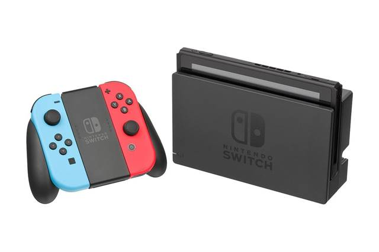
- Le cartucce girano, sia Switch che Switch 2Il punto
Nintendo ha confermato che anche le schede di gioco Switch 2 non sono region-locked: una copia comprata a Tokyo parte su una console europea. Il limite vero non è la regione, è la lingua — e si controlla sul retro della scatola, dove le lingue supportate sono elencate. In alternativa, sulla console: Impostazioni → Informazioni software → Informazioni di supporto. - Il paradosso da tenere a mente
I titoli Nintendo first-party (Mario, Zelda, Pokémon, Kirby) sono quasi sempre multilingua italiano incluso, e sono quindi gli unici che ha senso portarsi a casa. Ma sono anche quelli che l'usato sconta di meno: Nintendo tiene il prezzo, e da Book Off un first-party recente sta 500-1.500 yen sotto il nuovo e basta. Il resto del catalogo è scontato del 40-60%… ed è quasi tutto solo in giapponese. Fate pace con l'idea: si compra nuovo, e si risparmia lo stesso. - Nuovo: qui il risparmio c'è ed è grossoNuovo
Un gioco Switch 2 di punta costa 9.980 ¥ in Giappone, cioè circa 53 €. Lo stesso gioco in Europa sta a 89,99 €. Sono trentacinque euro a titolo, e con il tax-free sopra i 5.000 yen ne recuperate un altro 9%. Su tre o quattro giochi vi ripagate una giornata di viaggio. - ⚠️ Le Game-Key Card: la novità che fregaDa controllare
Su Switch 2 esistono schede che non contengono il gioco, solo un permesso di scaricarlo. Si riconoscono da due segni sulla confezione: un'icona a forma di chiave in alto a destra sulla card e una fascia bianca in fondo alla custodia. Servono internet al primo avvio, spazio libero sulla console (la quantità è stampata sulla scatola) e la card deve restare inserita per giocare. Non sono legate a un account, quindi si rivendono — ma il giorno che Nintendo spegne i server diventano un pezzo di plastica. Nintendo dice che non le userà per i propri titoli: è un formato da editori terzi. Se volete il gioco sulla cartuccia, cercate le due marcature ed evitate. - ⚠️ La console giapponese a 50.000 yen non compratelaTrappola
Se in negozio vedete una Switch 2 a 49.980 ¥ (~267 €) contro i 69.980 ¥ (~374 €) dell'altra, non è un affare: è il modello per il solo mercato interno, in giapponese, region-locked e che pretende un account Nintendo giapponese. È l'unico prodotto Nintendo su cui la regione conta davvero. La versione multilingua costa 20.000 yen in più e a quel punto tanto vale comprarla in Italia. I giochi sì, la console no. - Il digitale non è più una scorciatoia
Dal marzo 2025 l'eShop giapponese rifiuta le carte di credito estere e PayPal, e le gift card eShop sono vincolate alla regione. L'arbitraggio digitale, che una volta funzionava, oggi è chiuso. Vale solo il fisico. - Dove, in ordine di convenienzaGiorni 6, 9, 11, 12
Usato: Jan-gle e Surugaya ad Akihabara, Book Off Super Bazaar, Trader (che ha anche un reparto di console testate con garanzia del negozio), Mandarake Galaxy a Nakano. Nuovo: Yodobashi e Bic Camera, dove il tax-free è automatico e la fila è organizzata. - Le altre console, in breve
PS4 e PS5: dischi region-free, ma DLC e codici sono legati all'account giapponese e non si riscattano. 3DS: region-locked, un gioco giapponese non parte su console europea — prendeteli solo se prendete anche la console. I giochi DS invece girano ovunque, tranne i pochi titoli solo per DSi.
Retrogaming e Game Boy Color
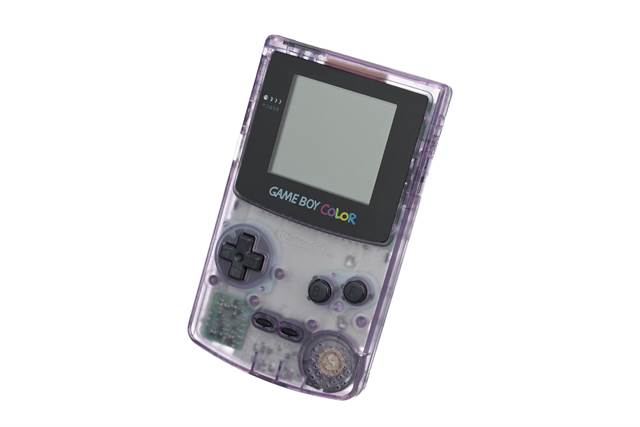
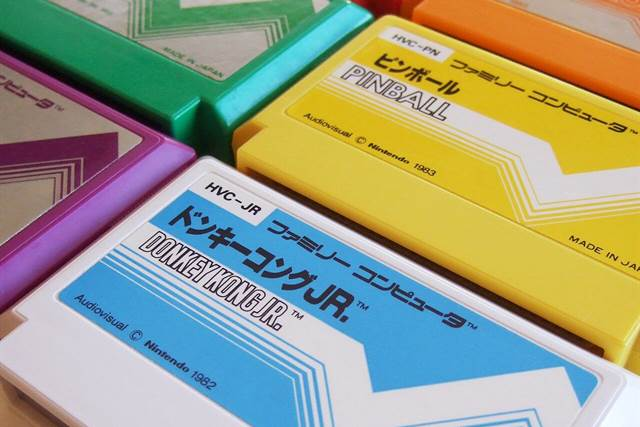
- Il Game Boy è la scelta giustaComprate qui
Di tutto il retrogaming è quello che ha più senso portarsi via: sta in tasca, va a pile — quindi niente problema dei 100 volt — e le cartucce Game Boy non hanno blocco regionale, per cui un gioco giapponese gira su qualsiasi GBC o Game Boy Advance europeo. Una console funzionante da Hard Off sta sui 3.000 yen (~16 €), i pezzi nell'angolo junk partono da 1.000 yen o meno. - Non compratelo da Super PotatoDove
Super Potato è bellissimo da visitare e ha i prezzi da guida turistica: lì un Game Boy Color costa il doppio o il triplo. Andateci a vedere e a farvi un'idea dei modelli, poi comprate nell'angolo junk di Hard Off, da Beep, da Retro Game Camp o a Den Den Town. Se serve una frase per orientarvi: Radio Kaikan e Super Potato servono a guardare, Hard Off e Surugaya a comprare. - Controllo n.1: il vano batteriePrima di tutto
Apritelo sempre, prima ancora di accendere. Se vedete crosta bianca o verde, le batterie hanno perso acido e la corrosione può aver mangiato la scheda: è il guasto che rende il pezzo non riparabile. Un "non si accende" con il vano pulito vale più di un "funziona" con la crosta verde, perché il primo di solito è solo l'interruttore ossidato. - Gli altri sei controlli, in ordine
1. Righe verticali o orizzontali sullo schermo = flat cable dell'LCD scollato, è un lavoro di saldatura. 2. Immagine debole o tremolante = condensatori esausti, non l'LCD (su un pezzo mai revisionato hanno tutti superato i quindici anni di vita). 3. La rotella del contrasto deve girare fluida e cambiare davvero l'immagine. 4. Provate sia l'altoparlante sia la presa cuffie: si guastano separatamente. 5. Infilate e togliete più di una cartuccia, per capire se il problema è lo slot o il gioco. 6. Fate scorrere l'interruttore di accensione dieci o quindici volte: se dopo un po' parte, era solo ossidazione. E se allo spegnimento resta un'immagine impressa per un istante, è normale, non è un difetto. - I giochi retro: i prezzi non sono più quelli
La favola del Giappone dove i giochi vecchi si trovano a due yen è finita da un pezzo: i titoli noti hanno prezzi da collezionismo internazionale. Quello che resta davvero a poco sono i giochi sfusi senza scatola nei cassoni (200-500 yen l'uno) e i titoli mai usciti in Italia, che è poi il motivo vero per comprarli lì. - Console da salotto: leggete prima questo
Famicom e Super Famicom hanno cartucce fisicamente diverse da NES e SNES europei, il segnale è NTSC e l'alimentatore è a 100 volt. Per giocarci in Italia servono la console giapponese più un trasformatore più un televisore o uno scaler che digerisca il 60 Hz. Bellissime da collezionare, scomode da usare. Il Game Boy tutto questo non ce l'ha. - La regola dei 100 volt, in generale
Quasi tutti i caricatori moderni accettano 100-240V (c'è scritto sul mattoncino) e serve solo l'adattatore di spina. Tutto il resto — console retro, piccoli elettrodomestici — è solo 100V e in Europa gira sottoalimentato o non gira. La garanzia comunque non vale fuori dal Giappone.
Manga
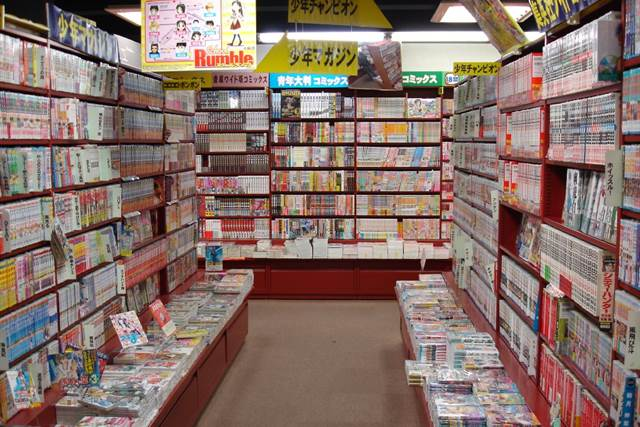
- Il nuovo costa la metà — ma il prezzo è identico ovunqueNuovo
Un tankōbon nuovo in Giappone sta fra 500 e 600 yen, cioè 2,70-3,20 €, contro i 5,50-8 € dell'edizione italiana. Il motivo per cui non serve girare a cercare offerte è il saihan seido: per legge l'editore fissa il prezzo di copertina e nessun negozio può scontarlo. Animate, Kinokuniya, la libreria della stazione e Amazon.co.jp costano esattamente uguale. Comprate dove capita, e scegliete il negozio per l'assortimento, non per il prezzo. - L'unico sconto possibile sul nuovo è il tax-free
Siccome il prezzo è blindato, il solo modo di pagare meno è superare i 5.000 yen nello stesso negozio (una decina di volumi) e chiedere il tax-free: circa il 9% indietro. Vale nelle catene registrate — Animate, Kinokuniya, i piani libri di Yodobashi e Tsutaya. - La cosa scomoda da dire: sono in giapponeseAspettativa da correggere
Non esiste il manga in italiano, e le edizioni in inglese in Giappone sono rare e più care di quelle italiane, perché sono importate. Quindi un manga comprato lì è un bell'oggetto e un souvenir, non una lettura — a meno che non sia una serie che già conoscete e che seguite per le tavole. Meglio saperlo prima di riempire una valigia di volumi che resteranno chiusi. - Quello che invece funziona benissimo senza sapere il giapponeseIl consiglio
Gli art book (画集, gashū): raccolte di illustrazioni degli autori, stampa e carta di livello altissimo, 2.500-4.000 yen, e in Europa o non arrivano o costano il triplo. Stesso discorso per i volumi celebrativi, i databook e le edizioni kanzenban (copertina rigida, pagine a colori, carta pesante). Sono libri che si guardano: la lingua non è un problema. - Usato: 110 yen a volume, e i set completiUsato
Il prezzo fisso vale solo sul nuovo, quindi l'usato è completamente libero — ed è il motivo per cui da Book Off un volume parte da 110 yen (60 centesimi) in condizioni che in Italia passerebbero per nuove. Cercate i 全巻セット (zenkan setto): serie complete vendute in blocco, dove il singolo volume scende ancora. A Mandarake Nakano, terzo piano, ci sono invece il fuori catalogo e le prime edizioni, e si trovano scaffali a 100 yen o tre volumi per 200. - Come si trova qualcosa negli scaffali
Le librerie giapponesi sono ordinate per cognome dell'autore in kana, non per titolo: senza il nome scritto in giapponese non trovate niente. Salvatevi sul telefono i titoli che vi interessano in caratteri giapponesi prima di partire, così li mostrate al commesso o li confrontate con il dorso. Il numero del volume invece è in cifre arabe sul dorso, quello si legge. - Il peso
Dieci volumi sono circa due chili. È la categoria che manda in crisi la valigia più in fretta di tutte, con un valore per chilo bassissimo. Se prendete tanto, valutate una spedizione dalla posta giapponese invece del bagaglio.
Action figure
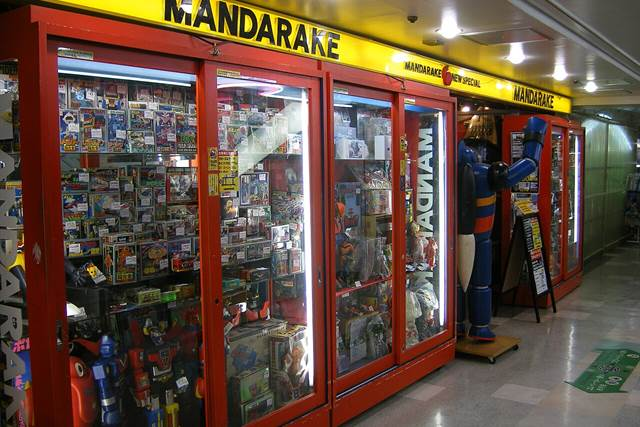
- Le prize figure: la cosa che in Europa proprio non esisteIl vero affare
Le プライズ (prize) sono le figure prodotte per le macchine acchiappa-premi delle sale giochi: Banpresto, SEGA, Furyu. Non vengono vendute al dettaglio in Giappone e non vengono esportate, quindi in Italia si trovano solo da importatori a 30-50 €. Lì finiscono nuove e ancora in scatola nei negozi dell'usato a 1.500-2.500 yen (8-13 €), e la qualità negli ultimi anni è arrivata a livelli che dieci anni fa erano da figure in scala. Book Off Super Bazaar, Surugaya e Mandarake ne hanno pareti intere. Se dovete comprare una cosa sola in questa categoria, comprate queste. - Nuovo di listino: si risparmia, ma meno di quanto si diceNuovo
Una Nendoroid di listino sta sui 6.000-8.000 yen (32-43 €) e in Italia la stessa figure va dai 45 ai 65 €; una S.H.Figuarts sta sui 7.000-9.000 yen contro i 60-90 € in Italia. Il ricarico europeo è reale — nell'ordine del 40-80% — ma sono trenta o quaranta euro a pezzo, non il doppio. Da Amiami ad Akihabara il nuovo è già scontato del 10-25% sul listino, ed è il posto giusto per comprarne una nuova senza cercarla usata. - Le esclusive web e negozioNuovo
Un pezzo delle linee Bandai e Good Smile esce come 魂ウェブ商店限定 o event exclusive: mai distribuito fuori dal Giappone, e in Europa o non c'è o costa il doppio sul mercato secondario. Il Tamashii Nations Store di Akihabara, il Kotobukiya di Akihabara, Volks e il Gundam Base (già in programma al Giorno 14) hanno ognuno le proprie esclusive di negozio. È l'unica categoria dove il "l'ho preso lì e qui non c'è" è letteralmente vero. - Usato: dove sta il -50%Usato
Una figure aperta ma integra scende della metà, e 箱痛み (scatola ammaccata, contenuto perfetto) è lo sconto migliore in assoluto se la scatola non vi interessa. Mandarake è il posto dove il grado dichiarato corrisponde e l'autenticità è controllata; Surugaya costa meno ma è più ruvido, e i suoi rank B/C/D si comprano senza diritto di reclamo. A Nakano Broadway le figure stanno soprattutto in Special 4 (2° piano, che copre anche gacha e prize) e nelle altre annex Special. - Cosa controllare in negozio
Che ci siano tutte le mani e gli accessori intercambiabili — sono i pezzi che spariscono, sono minuscoli e da soli non si ricomprano — e che le articolazioni non siano lasche. Sulle figure di dieci o più anni la plastica morbida può diventare appiccicosa: è degrado del materiale, non sporco, e non si risolve. Nei negozi in vetro chiedete di vedere il pezzo aperto: lo fanno. - I falsi
Nelle catene registrate il rischio è basso, il problema riguarda i mercatini e l'online. La regola vale comunque: un prezzo assurdamente basso su un pezzo ricercato è un falso. Prima di spendere su qualcosa di importante, MyFigureCollection vi dà listino e foto ufficiali, Suruga-ya online il prezzo di mercato reale. - Il problema vero è il volumeBagaglio
Una figure in scala è una scatola da 30 cm che pesa quasi niente ma occupa mezza valigia, e schiacciarla vuol dire rovinarla. Con 7 kg di bagaglio a mano il vincolo non è il peso, è lo spazio. Decidete prima quanto volume potete permettervi, o mettete in conto la spedizione.
Tastiere e mouse
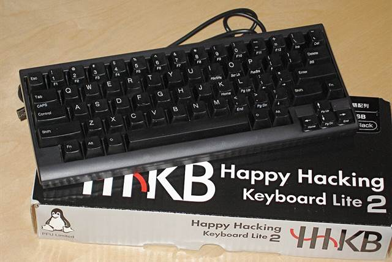
- Le tastiere Topre sono il caso migliore di tutta la paginaConviene
HHKB (PFU) e Realforce (Topre) sono prodotti giapponesi che in Europa arrivano col contagocce e col ricarico dell'importatore. Una HHKB Professional Hybrid Type-S sta intorno ai 36.000-37.000 yen in Giappone (~195 €); in Europa la stessa tastiera viaggia sui 320-390 €. Realforce è messa anche peggio: distribuzione europea quasi inesistente, quindi si paga quello che chiede il rivenditore. Con il tax-free si scende ancora del 9%. È il pezzo di tecnologia che ha più senso comprare lì. - ⚠️ Il layout: l'errore da cui non si torna indietroDa verificare
Il mercato giapponese vende soprattutto layout JIS, che ha barra spaziatrice corta (ci stanno due tasti in più per l'input giapponese), Invio a L rovesciata su due righe e diversi simboli spostati — la @ per prima. Per scrivere in italiano è scomodo, e i keycap di ricambio JIS fuori dal Giappone non esistono. Riconoscerlo è banale: Invio largo e rettangolare = US/ANSI, Invio alto a L = JIS o ISO. In negozio chiedete la versione 英語配列 (eigo hairetsu, layout inglese) e controllate la sigla: su HHKB Type-S bianca, PD-KB800WS è la US, PD-KB820WS è la giapponese. - Yushakobo — il negozio da vedereAkihabara
遊舎工房, nelle stradine a nord di Akihabara: il primo negozio giapponese dedicato alle tastiere custom (2019). Kit, switch sfusi, keycap, un banco dove si monta la tastiera sul posto e un distributore a capsule di switch all'ingresso. Ma sappiate cosa comprate: la maggior parte delle tastiere lì sono kit senza switch e senza keycap, da assemblare e spesso da saldare. Se volete una tastiera che funziona appena aperta, non è questo il posto. Sito in inglese: shop.yushakobo.jp. È piccolo e sempre pieno. - Dove comprare quelle già montate
Tsukumo (piano -1) è il riferimento per HHKB e Realforce, con i modelli in prova. Yodobashi Akiba ha il muro di tastiere da provare più grande della città e il tax-free organizzato. Poi Bic Camera, Sofmap, Ark e i negozi di componenti sulla Chuo-dori per Filco, Leopold, Archiss e Keychron. Se un modello specifico non si trova, Amazon.co.jp consegna in giornata se ordinate la mattina — anche in hotel, avvisando la reception. - La garanzia resta in Giappone
Un pezzo comprato lì non è coperto dai programmi di assistenza europei del produttore. Su una tastiera meccanica è un rischio accettabile; su un portatile o uno smartphone molto meno. - I mouse: qui il vantaggio è più sottile
Logitech, Razer e Corsair costano uguale o di più che in Italia, perché sono marchi globali. Quello che si trova solo lì sono i marchi giapponesi — Elecom (compresi i trackball, che hanno un seguito), Buffalo, Sanwa Supply — e la roba 訳あり in outlet da Sofmap e Janpara. Yodobashi e Bic Camera hanno interi tavoli di mouse da provare a mano, che è già un motivo per passarci.
Sconti: dove sono e dove non sono
- Il tax-free è lo sconto principale — ma dal 1° novembre 2026 funziona diversamenteRegola nuova
La soglia resta 5.000 yen più IVA (5.500 IVA compresa) di spesa nello stesso negozio e nello stesso giorno, e serve il passaporto fisico alla cassa, non la foto. Quello che cambia, un mese prima della vostra partenza, è il quando: l'IVA non viene più tolta in cassa, la pagate e vi viene rimborsata dopo la partenza. In cassa scegliete come ricevere il rimborso (di solito sulla carta). Il giorno del volo, a Narita e prima di consegnare le valigie, si passa il passaporto al chiosco doganale del tax-free (oppure si fa prima con Visit Japan Web): la dogana conferma che la merce esce dal Giappone e ogni tanto chiede di vederla. Poi il negozio versa il rimborso, di solito in una o due settimane: circa il 9% del prezzo pagato (un undicesimo), meno una piccola commissione che alcuni grandi magazzini trattengono.
Tre conseguenze pratiche: conservate tutti gli scontrini; tenete la merce accessibile e intera, perché se manca un pezzo di uno scontrino salta il rimborso di tutto lo scontrino; e il cibo comprato tax-free e mangiato in Giappone va dichiarato al banco della dogana invece che al chiosco. In compenso cade la vecchia distinzione fra beni di consumo e beni generici, quindi niente più sacchetti sigillati da non aprire. - Punti sì, ma non insieme al tax-free
Yodobashi e Bic Camera danno il 10% in punti, ma se chiedete il tax-free la percentuale di solito scende molto. In genere sull'elettronica cara conviene il tax-free, sui piccoli acquisti i punti — e i punti si spendono solo lì, quindi valgono soltanto se comprate più volte. - LEGO: mettetevi il cuore in paceAspettativa da correggere
Il LEGO in Giappone costa più che in Italia: è importato e i prezzi di listino sono alti. Le uniche eccezioni sono i set fuori produzione a Yamashiroya, il LEGO usato o sfuso da Book Off e Hard Off, e i cassoni di fine serie da Don Quijote. La cosa che invece conviene davvero comprare lì sono i nanoblock (Kawada): mattoncini più piccoli del LEGO, set giapponesi da 800-2.000 yen introvabili qui. - Il criterio in una riga
Conviene ciò che è prodotto o distribuito solo in Giappone (manga, prize figure, HHKB, esclusive Bandai, giochi Nintendo) e conviene l'usato in generale. Non conviene niente di globale comprato nuovo: LEGO, Apple, Logitech, videogiochi di terze parti multipiattaforma. - Un controllo veloce prima di spendere
Per i pezzi importanti, mercari.jp e Suruga-ya online vi dicono in trenta secondi se il prezzo del negozio è nella norma; per l'elettronica nuova c'è kakaku.com, che incrocia tutti i negozi giapponesi. Nei negozi di usato però il pezzo è uno solo: se il prezzo è giusto, non tornate domani. - Contanti
I negozi grandi prendono carta, i banchi dell'usato, i piccoli retrogaming e le annex indipendenti di Nakano spesso no. Tenete sempre 10-20.000 yen in tasca nelle giornate di shopping.
Orologi: quattro strade, sceglietene una
Un orologio giapponese è uno dei pochi acquisti che in Giappone convengono davvero: molti modelli esistono solo lì, e quelli che arrivano in Europa costano parecchio di più. Qui sotto quattro strade molto diverse, tutte sotto la franchigia doganale di 430 € a testa (che però si somma al resto degli acquisti: vedi Tax-free, dogana e valigie).
- 1. L'elegante: Seiko SZSB011Da ordinare prima
 Automatico con quadrante avorio, lancette dauphine e bracciale in acciaio, prodotto solo per il mercato giapponese: in Giappone lo chiamano "Baby Grand Seiko". Listino 58.300 ¥, online da circa 46.600 ¥ (kakaku.com), usato buono sui 32.000-42.000 ¥: con così poca differenza conviene nuovo, con la garanzia. Il problema è la disponibilità: è venduto solo online e nei negozi Seiko autorizzati (da Yodobashi e Bic Camera non c'è), e va a ondate. A settembre 2026 un rivenditore lo dava esaurito, con il riassortimento a fine dicembre. Il modo sicuro è ordinarlo a fine novembre su Amazon.co.jp o Rakuten, scegliendo la consegna all'hotel APA di Tokyo fra il 10 e il 12 dicembre, quando ci siete già (un pacco arrivato prima del check-in rischia di essere rifiutato), e con una mail all'hotel per avvisare che arriva un pacco a vostro nome. Comprato online non ha il tax-free. La garanzia dei modelli per il mercato giapponese è pensata per il Giappone: in Italia non contateci.
Automatico con quadrante avorio, lancette dauphine e bracciale in acciaio, prodotto solo per il mercato giapponese: in Giappone lo chiamano "Baby Grand Seiko". Listino 58.300 ¥, online da circa 46.600 ¥ (kakaku.com), usato buono sui 32.000-42.000 ¥: con così poca differenza conviene nuovo, con la garanzia. Il problema è la disponibilità: è venduto solo online e nei negozi Seiko autorizzati (da Yodobashi e Bic Camera non c'è), e va a ondate. A settembre 2026 un rivenditore lo dava esaurito, con il riassortimento a fine dicembre. Il modo sicuro è ordinarlo a fine novembre su Amazon.co.jp o Rakuten, scegliendo la consegna all'hotel APA di Tokyo fra il 10 e il 12 dicembre, quando ci siete già (un pacco arrivato prima del check-in rischia di essere rifiutato), e con una mail all'hotel per avvisare che arriva un pacco a vostro nome. Comprato online non ha il tax-free. La garanzia dei modelli per il mercato giapponese è pensata per il Giappone: in Italia non contateci.
Compromessi, alternative e come riconoscerlo
I compromessi, detti chiaramente: vetro Hardlex bombato e non zaffiro, precisione dichiarata +45/−35 secondi al giorno, niente luminescente. È il successore del SARB033/035, che aveva zaffiro e calibro 6R15 ma è fuori produzione dal 2018: sull'usato costa molto di più ed è pieno di esemplari rimontati con pezzi non originali.
Non sbagliate modello: la serie ha quattro colori sulla stessa cassa, e il codice sul fondello (4R35-03X0) è uguale per tutti. L'unica cosa che distingue il quadrante è la sigla SZSB0xx sul cartellino; il 014 ha le lancette dorate.
SZSB011
avorio ✓
SZSB012
nero
SZSB013
blu
SZSB014
marrone, lancette oroSull'usato, se lo trovate: che sia funzionante, che ci siano tutte le maglie del bracciale e che il fondello a vista sia limpido. A Nakano (G12) si cerca da Jack Road, TWC e Komehyo, che fanno il tax-free.
- 2. Il giapponese di tutti i giorni: Seiko 5 Sports con il giorno in kanjiNuovo, tax-free
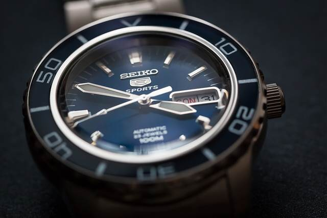
L'automatico Seiko più semplice, nelle versioni per il mercato giapponese con la sigla SBSA e la scritta "Made in Japan": solo queste hanno il giorno della settimana che si può mettere in kanji (月 火 水…) o in inglese. È un dettaglio piccolo, ma fuori dal Giappone non esiste. Calibro 4R36 con data e giorno, 100 m. Il modello classico, SBSA005 nero, ha un listino di 42.900 ¥ e si trova sui 34.000-36.000 ¥. La cassa è da 42,5 mm; chi ha il polso sottile guardi la versione midsize SBSA201, da 36 mm. Si compra in negozio con il tax-free: da Yodobashi a Shinjuku il pomeriggio del G15, cioè alla fine, come i souvenir. Il giorno si cambia girando la corona in avanti, ma mai fra le 21 e le 3, quando il meccanismo sta già cambiando data. - 3. Il nerd: G-SHOCK Nintendo e Pokémon, a caccia di usatoCaccia all'usato
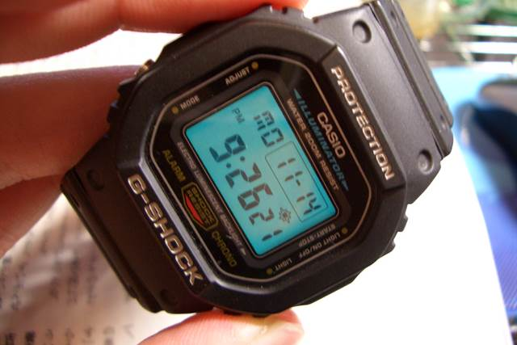
Casio fa ogni tanto un G-SHOCK con un videogioco, venduto solo in Giappone e solo a estrazione, e non lo rifà: quelli di Mother, la serie RPG di Nintendo uscita in Europa solo in parte, sono i più cercati. GW-M5610UMOT21-1JR (2022, nero), GW-6900MOT24-4JR (2024, rosso, per i 30 anni di Mother 2) e DW-5600MOT26-9JR (luglio 2026, giallo, per i 20 anni di Mother 3: con la retroilluminazione si accende un campo di girasoli in pixel art). C'è poi il GA-110PKM dei Pokémon per i 30 anni, 33.000 ¥ al lancio, sparito in pochi minuti. Nuovi non si trovano più: usati, i due Mother più vecchi si pagano sui 35.000-40.000 ¥, più del prezzo di listino. Si cercano da Surugaya, che li compra e li rivende (Akihabara G9, Nakano, Ikebukuro G13), e nei negozi di usato di marca. Prima di pagare: la sigla completa sul retro deve essere quella del modello, con la scatola speciale se dichiarata "completo", e un controllo sui prezzi venduti di Mercari vi dice se il prezzo è onesto. - 4. Il collezionista: Seiko in edizione limitata con un animeSi compra da casa
Seiko fa edizioni numerate con gli anime, vendute quasi solo in Giappone e mai ristampate. Nel 2026: Initial D (la RX-7 gialla di Keisuke, 1.995 pezzi, 65.780 ¥), Bocchi the Rock! (cronografo con il quadrante a disco in vinile, 300 pezzi, 59.400 ¥, preordini fino al 27 novembre), più Love Live!, Fullmetal Alchemist e Sanrio. Hanno senso solo se l'anime è uno dei vostri preferiti: altrimenti è un Seiko con un logo. Non sono acquisti da viaggio: si preordinano dai negozi ufficiali o tramite un servizio di spedizione dal Giappone, e di solito arrivano mesi dopo. L'Evangelion per i 30 anni costa 132.000 ¥ e supera da solo la franchigia doganale.
Souvenir: ceramiche, Uniqlo, cibo e rientro
Ceramiche
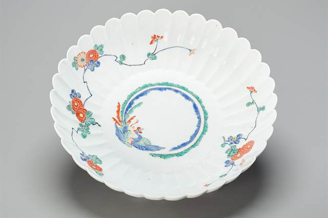
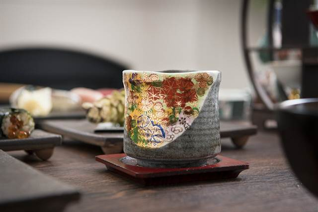
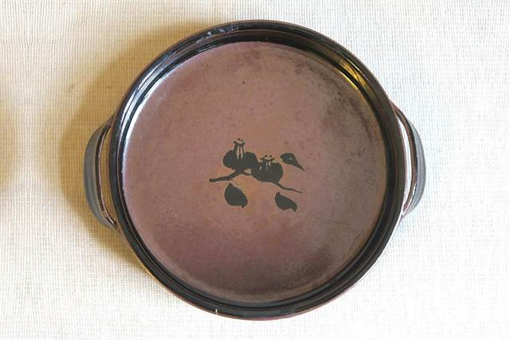
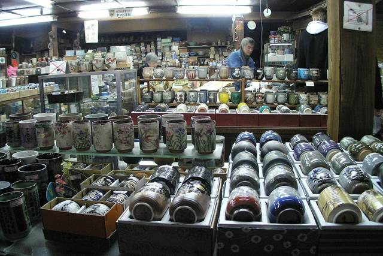
- Il pezzo nuovo: Traditional Crafts Aoyama SquareGiorno 14
Ad Aoyama-itchome, sulla metro Oedo: il negozio dell'associazione nazionale dei mestieri tradizionali, con la ceramica di tutto il Giappone sotto lo stesso tetto — Arita, Imari, Kutani, Mino, Mashiko e anche la Kiyomizu-yaki di Kyoto. Ogni pezzo dice da dove viene e chi l'ha fatto, prezzi scritti dalla ciotola di tutti i giorni al pezzo da vetrina, tax-free. Aperto tutti i giorni 11-19. È la mattina del G14, il giorno prima del volo. - A Kyoto si guarda: Kyoto Ceramic CenterGiorno 2
A Gojo-zaka, la via dei vasai sotto Kiyomizu, sulla strada del G2: il negozio dei ceramisti di Kyoto. Serve a vedere la Kiyomizu-yaki da vicino e a farsi un'idea dei prezzi. Si compra qui solo il pezzo firmato che non ritrovereste ad Aoyama. Aperto 10-18, chiuso il giovedì. - Il pezzo vecchio: i due mercati delle pulciGiorni 4 e 13
Al Garakuta-ichi di To-ji (G4) e al Boro-ichi di Setagaya (G13) la ceramica usata e d'epoca è una delle cose più comuni sui banchi: ciotole, piatti imari, tazze da sake. Contanti, e sul prezzo si tratta. - Il piatto da usare a casa: KappabashiGiorno 9
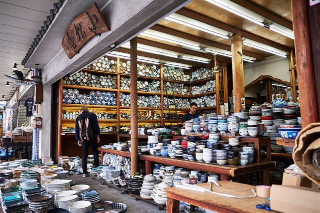
Nella via degli utensili (G9) ci sono negozi di stoviglie per ristoranti con ciotole da ramen, piatti da sushi e tazze a prezzi da ingrosso: la ceramica giapponese da tavola, non quella da vetrina. - Come farle arrivare intere
Chiedete sempre l'imballaggio da viaggio (kowaremono, "fragile"): i negozi seri lo fanno bene e gratis. In valigia vanno al centro, avvolte nei vestiti, mai contro le pareti. Il pezzo di valore va nel bagaglio a mano, se ci sta nei 7 kg.
Cibo da riportare
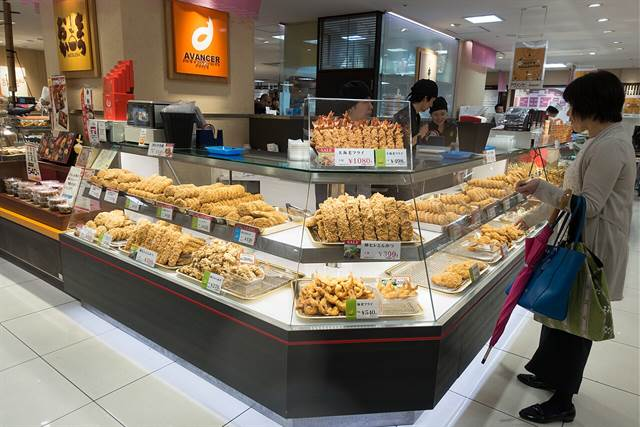
- Dove: il depachika e Narita, alla fineGiorno 15
Il piano alimentare di Isetan a Shinjuku, nel pomeriggio del G15, ha i dolci confezionati delle pasticcerie di tutto il Giappone, in scatole fatte apposta per essere regalate. Il duty free di Narita, dopo i controlli, ha i Kit Kat regionali e i dolci di ogni prefettura. Comprare alla fine vuol dire scadenze più lunghe e niente peso trascinato per due settimane. - Cosa regge il viaggio
Dolci confezionati e biscotti, senbei (cracker di riso), tè in foglie, spezie come il sansho e il shichimi di Kyoto, le bustine di dashi, i Kit Kat dai gusti locali, il sake (vedi i limiti qui sotto). Sansho, shichimi e dashi si trovano anche nel depachika di Isetan al G15: al mercato Nishiki (G5) si assaggiano, e si comprano solo se il produttore vi convince. - Cosa resta in Giappone: carne e latticiniVietato
Nell'Unione Europea non si possono portare carne né latticini da paesi extra UE, né in valigia né per posta: niente manzo essiccato, salumi, curry pronti con la carne, formaggi o dolci freschi alla panna. Il pesce essiccato e i prodotti ittici invece sono ammessi, fino a 20 kg a persona.
Uniqlo
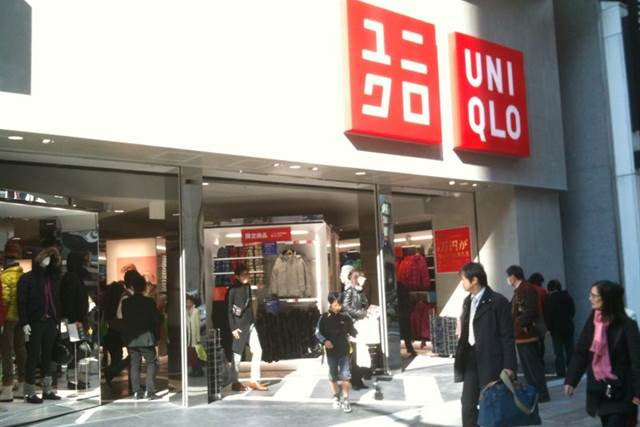
- Dove: UNIQLO GINZA, la sera del Giorno 14Giorno 14
Il negozio Uniqlo più grande del mondo, dodici piani a Ginza 6-chome. All'11° piano c'è il reparto UT più grande che esista (magliette e felpe con le collaborazioni, comprese quelle fatte per Ginza), al 5° l'angolo dove si personalizza un capo. Aperto tutti i giorni dalle 11 alle 21, tax-free sopra i 5.000 yen più IVA, con il passaporto. Nel programma ci si arriva a piedi da Shimbashi, rientrando da Odaiba (G14). Se salta, c'è UNIQLO TOKYO a Ginza 3-chome, quattro piani, stessi orari. - Perché comprarlo lì
I prezzi di listino giapponesi sono in genere più bassi di quelli italiani, e il tax-free toglie un altro 9% circa. Ma soprattutto ci sono capi e grafiche che in Europa non arrivano. Prima di partire guardate sull'app Uniqlo italiana i prezzi di quello che vi interessa, e confrontateli in negozio. - Le collaborazioni UT già note (a settembre 2026)Da ricontrollare
La più adatta a voi è la Manga UT per i 100 anni di Shueisha, l'editore di Jump: circa cento grafiche in due anni, molte vendute solo in Giappone. Finora tre uscite, fra cui Jujutsu Kaisen, HUNTER×HUNTER e Rurouni Kenshin a marzo, e BLEACH, SPY×FAMILY, Yu-Gi-Oh!, Black Clover e Mashle fra agosto e settembre. Una quarta uscita a fine anno è plausibile, ma non ancora annunciata. Poi le felpe di Mario Kart World per l'autunno-inverno e la collezione KAWS UNIVERSE di settembre. La serie per i 30 anni dei Pokémon è di marzo: a dicembre potrebbe essere esaurita. - Quelle di dicembre si sanno solo a fine novembre
Uniqlo annuncia le uscite natalizie poche settimane prima: nel 2025 la maglieria di KAWS è uscita il 21 novembre, Zootopia il 28 novembre e Sanrio il 15 dicembre. Verso fine novembre guardate la pagina dei comunicati di Uniqlo Giappone (uniqlo.com/jp/ja/contents/corp/press-release) o i siti giapponesi che raccolgono il calendario delle collaborazioni. - Le Heattech non aspettano il Giorno 14
Se a Kyoto fa più freddo del previsto, la maglia termica si compra subito: Uniqlo c'è in ogni quartiere, e al G3 ci passate davanti su Shinsaibashi-suji. Quella è roba da usare, non un souvenir.
Tax-free, dogana e valigie
- Tax-free: dal 1° novembre 2026 si conferma a Narita e si incassa dopoRegola nuova
Sopra i 5.000 yen più IVA nello stesso negozio e nello stesso giorno, con il passaporto fisico alla cassa. L'IVA la pagate in negozio; a Narita, prima del check-in, si passa il passaporto al chiosco doganale del tax-free, e il rimborso (circa il 9% di quanto speso) lo versa poi il negozio, di solito sulla carta in una o due settimane. Tenete tutti gli scontrini in una busta sola e la merce intera e a portata di mano, perché la dogana può chiedere di vederla. Dettagli nella sezione Sconti, qui sopra. - Al rientro in Italia: 430 € a personaDa sapere
Chi arriva in aereo da fuori UE può portare merci per 430 € a testa senza pagare dazi e IVA. Sopra, la merce va dichiarata alla dogana di Fiumicino e si paga sull'eccedenza; se è un singolo oggetto a superare la soglia, si paga sul suo intero valore. Una figure da collezione o l'orologio ci arrivano in fretta: sommate prima di partire. Gli alcolici hanno limiti a parte: 2 litri a persona sotto i 22 gradi (il sake) oppure 1 litro sopra. - Le valigie: 25 kg a testa, e il peso che conta è quello del ritorno
Manga e ceramiche pesano più di quanto sembri: un volume sta sui 200 grammi, dieci volumi fanno due chili. Partite con le valigie mezze vuote, e portate una borsa pieghevole da imbarcare al ritorno se serve. Il bagaglio a mano Qatar è di 7 kg. - Se non ci sta, si spedisce
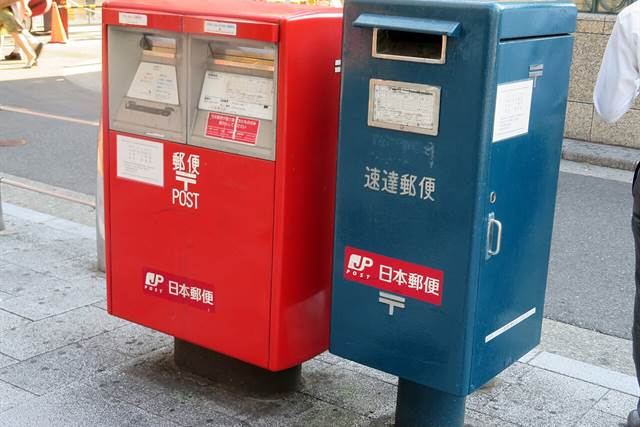
Gli uffici postali giapponesi (Japan Post, l'insegna rossa con la 〒) spediscono in Italia: EMS è veloce e tracciato, la posta ordinaria via mare costa molto meno e ci mette un paio di mesi. È la soluzione per i manga in blocco e la roba ingombrante. Anche la merce spedita conta per la dogana, e carne e latticini restano vietati anche per posta.
Cosa in questa pagina non è in programma: le tastiere. Tsukumo (piano -1) e Yushakobo stanno dentro lo stesso rettangolo di seicento metri del Giorno 11 e valgono mezz'ora a testa, ma non hanno una casella nella giornata: se una HHKB vi interessa davvero, il momento è dopo Book Off e prima di Hard Off, e qualcos'altro salta.